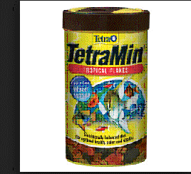
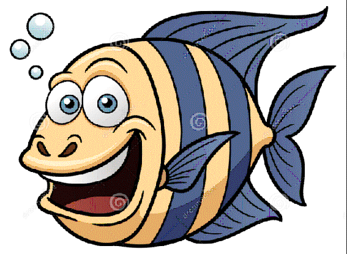

Feeding Fish
Sorted steps (Instructions) as of 2/21/2016 5:13 PM
 Next step(s): ▲ Cut brine shrimp cube in half with knife Next step(s): ▲ Cut brine shrimp cube in half with knifeStep 3) ▲ Cut brine shrimp cube in half with knife
Previous step(s): ■ Frozen brine shrimp■ Knife Next step(s): ■ Brine shrimp cube halfStep 4) ■ Brine shrimp cube half
Previous step(s): ▲ Cut brine shrimp cube in half with knife Next step(s): ▲ Put shrimp cube in cup Next step(s): ▲ Put shrimp cube in cupStep 6) ▲ Put shrimp cube in cup
Previous step(s): ■ Brine shrimp cube half■ Plastic cup Next step(s): ■ Cup with brine shrimpStep 7) ■ Cup with brine shrimp
Previous step(s): ▲ Put shrimp cube in cup Next step(s): ▲ Fill brine shrimp cup with water from turkey baster Next step(s): ▲ Fill turkey baster with water from tank ▲ Inject brine shrimp water into tank using turkey basterStep 9) ■ Active saltwater fish tank
Next step(s): ▲ Fill turkey baster with water from tankStep 10) ▲ Fill turkey baster with water from tank
Previous step(s): ■ Turkey baster■ Active saltwater fish tank Next step(s): ■ Turkey baster filled with tank waterStep 11) ■ Turkey baster filled with tank water
Previous step(s): ▲ Fill turkey baster with water from tank Next step(s): ▲ Fill brine shrimp cup with water from turkey basterStep 12) ▲ Fill brine shrimp cup with water from turkey baster
Previous step(s): ■ Cup with brine shrimp■ Turkey baster filled with tank water Next step(s): ■ Cup filled with brine shrimp and waterStep 13) ■ Cup filled with brine shrimp and water
Previous step(s): ▲ Fill brine shrimp cup with water from turkey baster Next step(s): ▲ Inject brine shrimp water into tank using turkey basterStep 14) ▲ Inject brine shrimp water into tank using turkey baster
Previous step(s): ■ Cup filled with brine shrimp and water■ Turkey baster Next step(s): ■ Fish are fed  Previous step(s): ▲ Inject brine shrimp water into tank using turkey baster